Kauza Fifinka: Dňa 17.04.2023 išiel mestom Svidník turista a jeho pes – Fifinka. Pes bol v tom čase viditeľne vyčerpaný, zranený a apatický, čo zalarmovalo okoloidúcich ľudí. Dobrí ľudia, ktorým osud fenky nebol ľahostajný, pána zastavili a snažili sa mu v dobrej mienke poradiť, aby so psom ďalej nepokračoval v ceste. Na tieto podnety začal byť majiteľ psa agresívny a vulgárny a pokračoval s krívajúcou fenkou ďalej. Mal v pláne prejsť až do Bratislavy po Ceste hrdinov SNP. Nakoniec bola na miesto privolaná aj polícia. Od tohto momentu sa začalo jedno veľké zlyhanie štátnych inštitúcií, ktoré rozpíšem nižšie.
Tento prípad ma obzvlášť zaujal, keďže sám som Cestu hrdinov SNP absolvoval so svojím psom Hektorom. Bolo to pre nás to najkrajšie dobrodružstvo v živote, o ktorom som dokonca napísal aj knihu: Cesta s Hrdinom. Keď som sa dozvedel o tomto prípade a videl chlapa, čo sa snaží túto cestu prejsť so psíkom, ktorý zjavne nevládze, okamžite som sa vo veci začal angažovať. Bolo očividné, že toto nie je človek, ktorý svojho psa miluje a chce si cestu užiť krásnou turistikou, ale človek, ktorý sa vyžíva v týraní psa. Táto statočná fenka mala na sebe 5 kg batoh, ktorý jej spôsobil otvorené rany, nehovoriac o nadmernej záťaži v náročnom teréne. Pre Fifinku, drobného kríženca border kólie, by bol už aj 1 kg vážiaci batoh dosť ťažký... 5 kg batoh pre fenku môžeme porovnať s 50 kg batohom pre bežného turistu... Len vďaka dobrým ľuďom táto fenka prežila a ja som cítil povinnosť priložiť ruku k dielu tiež a tento prípad aktívne sledovať. Tu sú závery, ktoré vnímam, spolu s otázkami a podnetmi, ktoré stoja za zmienku.
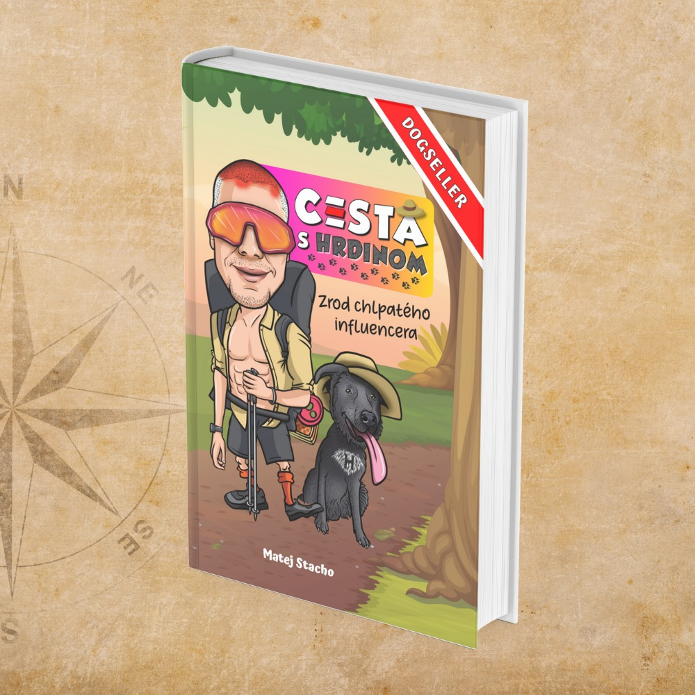
1. Zlyhanie – Polícia
Dňa 17.04.2023 bola privolaná hliadka polície na podnet dobrého anjela – Zlatky. Príslušníci na mieste videli, že fenka je v zlom stave, no situáciu vôbec nezvládli... Neprivolali na miesto RVPS, ktorá mohla v tom čase prípad vyhodnotiť a ihneď Fifinku odobrať či nariadiť vyšetrenie. Namiesto toho polícia tyrana nepochopiteľne nechala odkráčať s len tak-tak stojacim psom na nohách. Týmto ignorantstvom umožnili páchateľovi pokračovať v priestupku. Ak by polícia vtedy konala správne a využila svoje oprávnenia – žiadna kauza by možno vôbec nevznikla! Žiadame vysvetlenie a vyjadrenie, či sú policajti v hliadkach oboznámení, ako majú v týchto prípadoch konať. Ak áno, mala by byť vyvodená zodpovednosť priamo voči zasahujúcim policajtom, a ak nie, mali by byť potrestaní funkcionári, ktorí neposkytli informácie hliadkujúcim policajtom pri postupe v takejto situácii.
2. Zlyhanie – Polícia + RVPS
Na druhý deň, dňa 18.04.2023, to dobrým ľuďom na čele so Zlatkou neprestalo byť ľahostajné a začali po sadistickom turistovi opäť pátrať na vlastnú päsť. Brázdili priľahlé turistické trasy a zmobilizovali dobrovoľníkov, ktorí hľadali Fifinku. Opäť bola kontaktovaná aj polícia, ktorá musela znova zasahovať. (Chybou bolo, že na páchateľa priestupku si z predošlého dňa policajti nezapísali tel. číslo, ktoré mohlo celodenné pátranie výrazne skrátiť.) Nakoniec bol tyran po celom dni dolapený dobrovoľníkmi pri obci Zborov. Na miesto sa dostavila polícia spolu s veterinárom. Opäť nebola privolaná RVPS, ktorá mohla znova vidieť psa v dezolátnom stave a mohla patrične zasiahnuť. Až na naliehanie veterinárky bol pes spolu s tyranom prevezený na ambulantné vyšetrenie na veterinu. V tom čase neboli zabezpečené opatrenia proti majiteľovi psa, ten, ak by chcel, mohol s fenkou kedykoľvek beztrestne odísť – Prečo neboli použité prostriedky, ktoré sú podľa zákona na to určené – ODOBRATIE alebo ZADRŽANIE psa v prípade preukázateľného a jasného týrania? Žiadame preverenie a vysvetlenie tohto postupu.
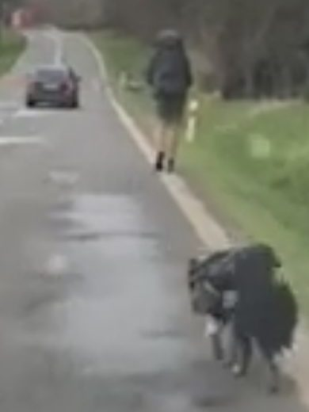
3. Prepustenie psíka
Psík bol u veterinára niekoľko dní, kým sa jeho zdravotný stav zlepšil. Boli konštatované diagnózy následkom neprimeraného a krutého zaobchádzania – týrania. Aj napriek lekárskej správe, ktorá potvrdzovala zranenia, opäť RVPS nezasiahla a prehliadala všetky indície týrania psa. Ak by sa pes na vyšetrenie nedostal, uhynul by do 48 hodín na totálne vyčerpanie organizmu. Do 15 kg vážiaca útla fenka na sebe nosila 5 kg batoh, čo je extrémna záťaž na organizmus zvieraťa. RVPS PARADOXNE HODNOTILA STAV PSA AŽ PO ZOTAVENÍ ZO ZRANENÍ. Prekvapivo vôbec neriešila príčinu zdravotných problémov ani skutky páchateľa, ktoré zviera priviedli na veterinu v poslednej chvíli. Jeho previnenie riešili iba blokovou pokutou, vraj v primeranej výške...
4. Mediálny tlak
Od 17.04.2023 sa internetom šírili videá, na ktorých je zjavné, že fenka bola vystavená verejnému týraniu. Bola vytvorená petícia na odobratie fenky. Na povrch sa dostal aj prípad ešte z roku 2020, kedy bol tento turistický sadista spolu s tou istou fenkou na turistike priamo na náročnom úseku tatranského štítu. Pri výstupe dostal pokutu od poľskej horskej služby za nezodpovedné správanie, keďže fenka mala vtedy krvavé labky a bola totálne vyčerpaná! Ľudia na internete hlásili svoje skúsenosti z rôznych turistík po Slovensku, kde pána spätne spoznali. Spoznali ho práve preto, že v každom prípade bola fenka Fifinka totálne vyčerpaná, čo bol hlavný dôvod, prečo si na tieto zážitky spomenuli. Prípad z Tatier z roku 2020 sa objavil aj v televíznych novinách, podobne ako aj najnovší prípad z roku 2023. Pod príspevkami sa začali objavovať informácie o minulosti páchateľa, ale aj adresa tyrana spolu s výzvami na krádež psa.
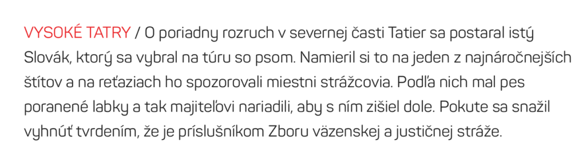
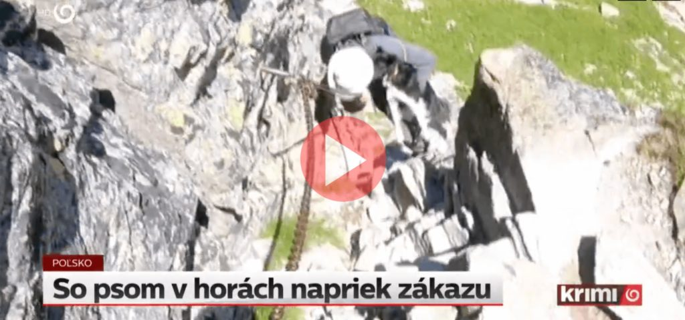
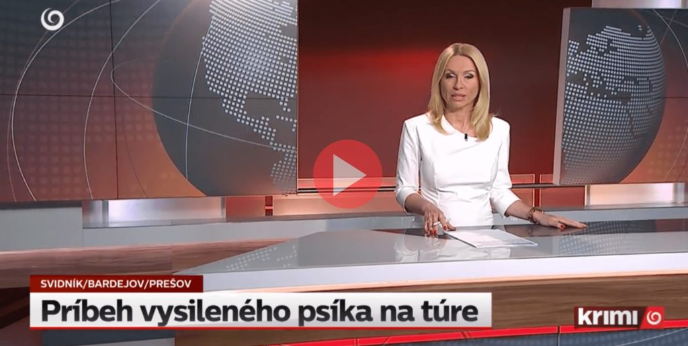
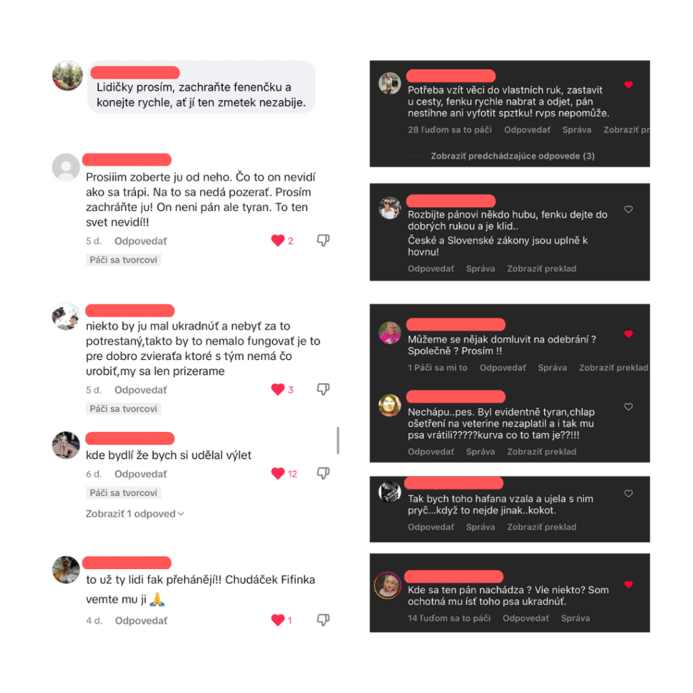
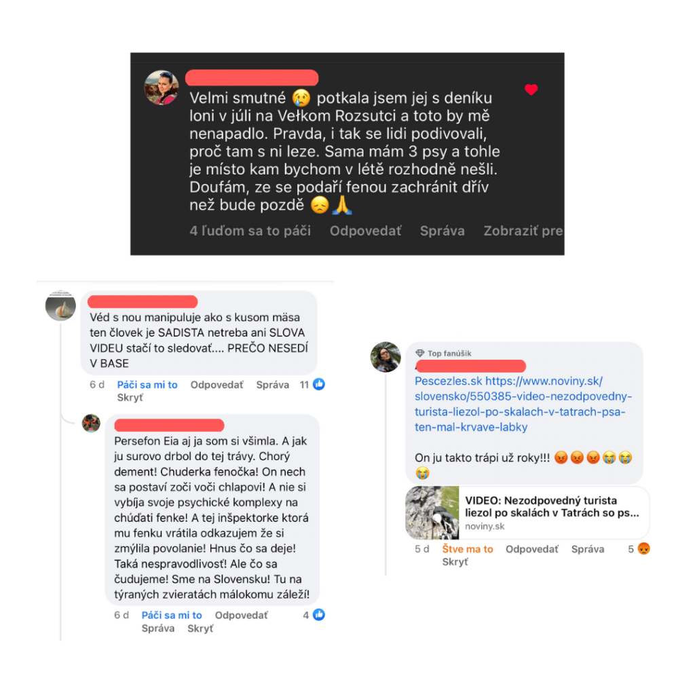
5. Nečinnosť
Aj napriek mediálnemu tlaku a sťažnostiam mnohých ľudí úrady celkom odignorovali toto volanie po spravodlivosti a nekonali v prospech týraného zvieraťa. Pýtame sa, ako je možné, že MVDr. Lenka Kmecová prehliadla všetky očividné prejavy týrania, ktoré videlo celé Slovensko, a prípad celkom odignorovala... Je na mieste pýtať sa, čo tam taký človek robí a ako postupuje v ostatných prípadoch, keď pri takomto zjavnom a mediálne známom prípade ignoruje volanie spoločnosti.
RVPS Bardejov vydalo vo veci stanovisko, no nedozvedeli sme sa prečo:
- neboli na mieste, keď bola fenka v bolestiach,
- nevykonali opatrenia, na ktoré mali vzhľadom na okolnosti právo (odobrať, zadržať psa),
- vo veci postupovali pomaly a pasívne bez žiadnej iniciatívy a záujmu pomôcť,
- sa o prípad začali zaujímať až po obrovskom mediálnom nátlaku po niekoľkých dňoch.
Je očividné, že pri stanovisku strávili dlhé hodiny, avšak aj to je plné bizarných a bezduchých vyhlásení, ktoré len podčiarkujú absolútnu nekompetentnosť a neschopnosť tohto úradu a jednotlivých zamestnancov, ktorým nejde o blaho zvierat, ale o štátny plat a vlastné pohodlie.
6. Absurdné stanovisko ŠVPS SR k prípadu border kólie na Ceste hrdinov SNP
O prípade vydalo ŠVPS SR dňa 28.04.2023 oficiálne vyjadrenie. Bolo napísané bez žiadnej sebareflexie a s dôrazom na vlastné obhájenie správnosti svojich krokov. Každému, kto tento prípad sleduje, je jasné, že určite existoval aj iný a lepší postup pri tomto konkrétnom prípade; napokon výhrady sú spomenuté vyššie v texte. To nám chce táto inštitúcia povedať, že takýto je normálny postup? Toto sa v našom štáte deje a je to v poriadku? Takto vyzerá štandardný postup, keď niekto nahlási týranie? Aký signál je to pre spoločnosť? Toto stanovisko nám hovorí, že ľudia, ktorých situácia pobúrila, sú precitlivení, a k páchateľovi pristupuje skôr ako k obeti...
Celé absurdné stanovisko nájdeš tu: svps.sk
V stanovisku hodnotia, že ADMINISTRATÍVNE KROKY boli v súlade so zákonom. V správe, ktorá má hodnotiť ZAOBCHÁDZANIE so živým tvorom, sa hodnotí správnosť administratívnych krokov (bizár, nie?), ktoré len ťažko dokážu zvieraťu pomôcť. Je zcestné a zbabelé hodnotiť administratívne kroky, a tým sa snažiť zbaviť zodpovednosti za totálne zlyhanie v celom prípade. Vo svojom vyhlásení klamú, keď uvádzajú, že po celú dobu bol braný ohľad na potreby zvieraťa. Je zrejmé, že na potreby zvieraťa sa vôbec nehľadelo. Stanovisko bolo písané s takou snahou o obhajobu, že ak by sa tak snažili pomôcť Fifinke, táto celá situácia by nikdy nevznikla. Asi nepočítali s tým, že vyhlásenie budú čítať ľudia, ktorí čítajú s porozumením. Namiesto ospravedlnenia, vyvodenia zodpovednosti, okamžitej nápravy a vydania exemplárnych opatrení proti tyranovi sa úrad na ochranu zvierat vyjadruje k administratívnym krokom. Vec považuje za vybavenú a spoločnosť považuje za precitlivenú... Tyrana, ktorý pred celým Slovenskom preukázateľne týral zviera, vôbec nespomenie a neodsúdi jeho skutky, čím vrhá veľmi zlé svetlo na inštitúciu, ktorá má tieto veci riešiť. Svojím alibizmom berie ľuďom nádej na spravodlivosť pri podobných skutkoch.
Len vďaka dobrovoľníkom je zviera nažive... Tí, čo sú za ochranu zvierat platení zo štátnych peňazí, sa o prípad absolútne nezaujímali a nechali by zviera kľudne zomrieť.
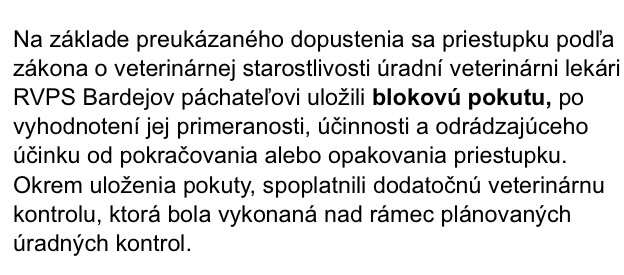
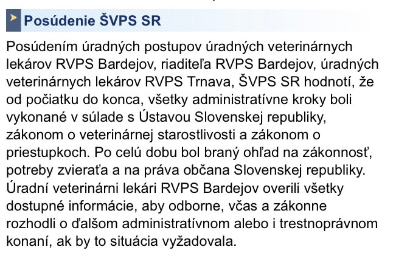
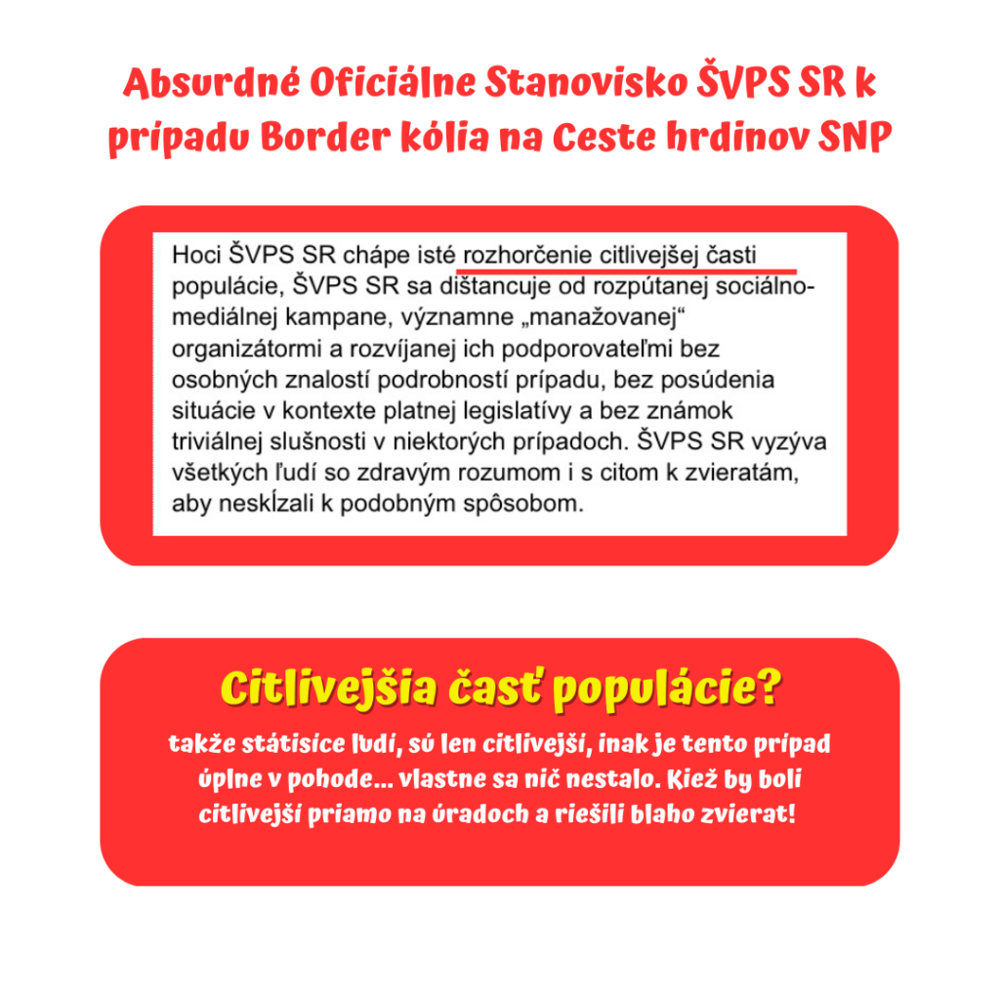
7. Nahlásenie krádeže Fifinky
Od doby zverejnenia adresy tyrana začali na adresu chodiť viacerí ľudia, ktorí chceli vidieť, v akom stave sa Fifinka nachádza. Na internete sa šírili výzvy na jej nedobrovoľné odobratie/krádež psa za účelom pomoci. Dňa 30.04.2023 mi bolo políciou oznámené, že tyran nahlásil krádež psa. Dôvodom tohto oznámenia bolo, že na mieste bolo spozorované auto s mojou ŠPZ... Celé Slovensko si vydýchlo, že pes už nie je v rukách tyrana, aj keď mnoho ľudí si myslí, že majiteľ fenku zabil.
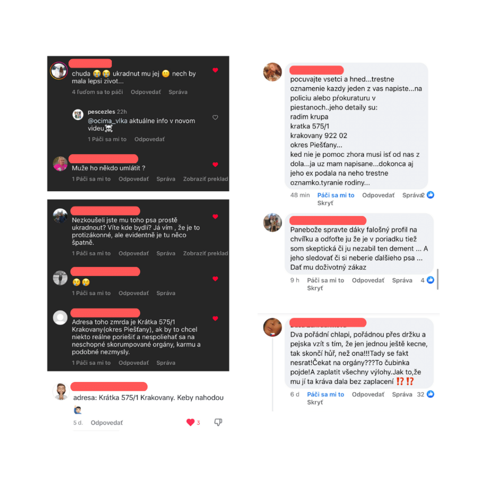
8. Mať mačku na reťazi je v poriadku?
Celé Slovensko rieši utýraného psíka Fifinku a sťažuje sa na nekompetentnosť úradov, akou je RVPS. Tá usilovne bráni svoje kroky a vo svojich stanoviskách tvrdí, že všetko robí v súlade so zákonom... Avšak keď boli títo kompetentní zamestnanci dňa 26.04.2023 na kontrole priamo u tyrana na pozemku, mali možnosť si všimnúť MAČKU NA REŤAZI. Tá im však nestála za pozornosť – veď predsa riešia psa, tak pred inými „vecami" treba zatvoriť oči. Nejaká mačka nie je predsa dôvod ich návštevy. A toto je presne to ignorantstvo, čo ľudí hnevá a prečo celý mediálny tlak začal a trvá. Ak by tam bol človek, ktorému naozaj záleží na zvieratách, určite by si mačičku všimol a z vlastnej iniciatívy začal konanie voči takémuto správaniu a mačku zachránil. Dokonca na mieste bola 30.04.2023 aj polícia, OO PZ Vrbové, ktorá zaisťovala stopy po krádeži Fifinky. Príslušníci si taktiež plnili úlohy v rámci prípadu, no žiadny ľudský ohľad na mačku, ktorá bola na reťazi len pár metrov od nich. Je jednoduchšie zavrieť oči, než si zbytočne urobiť ďalšiu prácu navyše... Smutné. Keď zvieratám nepomôžu ľudia, ktorí to majú v náplni svojej práce a sú za to platení, tak kto iný? Je absurdné, že ľudia, ktorým to nie je ľahostajné, musia riskovať často aj svoju slobodu pre záchranu života zvieraťa, ktoré nikto z kompetentných neberie vážne. Vyzývam na to, aby bol podaný podnet na prešetrenie chovu mačky na reťazi. Myslím, že to nie je celkom normálne a niečo to o majiteľovi svedčí...
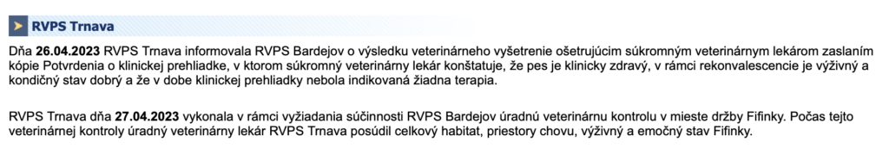
9. Reportáž v Reflexe
Známa bojovníčka za práva zvierat a žena, ktorá intenzívne rieši závažné spoločenské problémy (drogy, krádeže, týranie...), urobila k tejto kauze reportáž: markiza.sk – Reflex 9.5.2023
10. Božie mlyny melú
Radim Krupa dňa 22.06.2023 zomrel. Privodil si zranenie, ktoré ho pripútalo na lôžko, kde strávil približne mesiac. Pred vlastným domom pílil drevo a nešťastnou náhodou dostal ranu veľkým pňom priamo do hlavy. Ležiaceho v kaluži krvi a s naštartovanou pílou ho objavili po hodnej chvíli susedia, ktorí mu privolali pomoc. Krvácanie do mozgu sa mu však po niekoľkých dňoch stalo osudným. Je smutné, že to dopadlo práve takto. Aj keď sa na sociálnych sieťach objavovali desiatky nenávistných komentárov a viacerí priali tyranovi smrť, nenávisť nie je cesta. Radim mal byť riadne súdený za svoje činy, no pred spravodlivosťou ho „zachránila" smrť. Nakoniec všetky veci v živote sa dejú pre niečo a všetko je tak, ako má byť. Nech tento príbeh slúži ako výstraha všetkým tyranom. Božie mlyny melú pomaly, ale isto.
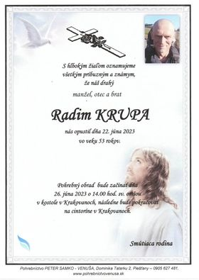
11. Čo je s Fifinkou?
Kristína Kovešová zverejnila v reportáži informáciu z utajeného zdroja, že Fifinka je v poriadku. Fenka sa nachádza v dobrých rukách a je o ňu riadne postarané. Dostáva lásku a rešpekt od ľudí, ktorí zvieratá milujú. Práve teraz zažíva skvelé chvíle so zvieracími a ľudskými kamošmi a zabúda na hrozné chvíle, ktoré zažila so svojím tyranom, ktorého aj napriek jeho krutosti milovala... To je tá úžasná a bezpodmienečná psí oddanosť. Takisto aj kocúr, ktorého držal tyran na reťazi, má nový, lepší domov bez reťazí a učí sa byť znovu slobodnou „šelmou". Aktuálne je prípad stále otvorený na polícii, a preto sa k veci nemôžem vyjadriť. Akonáhle sa celý prípad uzavrie, vydám oficiálne a záverečné vyjadrenie. Ak nebude potrebná právna pomoc na moju obhajobu, všetky peniaze vyzbierané na tento účel budú použité na pomoc psíkom v núdzi. Ďakujem za pochopenie.
O páchateľovi: psychopat = chránená osoba?
Radim Krupa bol bývalý príslušník ZVJS a psychológ, ktorý bol vraj prepustený, pretože nezvládol psychotesty. Okrem toho bolo na jeho osobu nahlásené týranie blízkej osoby. Podľa mnohých reakcií na internete Radim vraj týral svoje vlastné deti tým, že ich väznil v pivnici. Ohľadom Fifinky vyplávali na povrch skutočnosti, že fenka mala v priebehu 4 rokov porodiť minimálne 2-krát šteňatá, ktoré boli sadisticky usmrtené (utopené) majiteľom. Menovaný mal záznam (bloková pokuta) z roku 2020 od poľskej horskej služby za to, že so sebou vláčil vysilenú fenku na ťažko prístupné miesta, čím jej spôsobil poranenia (krvavé labky). Nechcem ani pomyslieť na to, na koľkých takýchto trýzniacich turistikách už s Fifinkou bol...
Tento rok (2023) chcel zdolať najdlhšiu turistickú trasu Cestu hrdinov SNP. V čase, keď fenka ledva stála na nohách, ich čakalo do cieľa viac ako 700 km! Bola to vražedná misia a tomuto vysokoškolsky vzdelanému človeku muselo byť jasné, že svojho psa ženie touto cestou na istú smrť.
Podľa okolia bol to psychicky narušený človek a manipulátor so sklonmi ubližovať a nútiť druhých k neprimeraným výkonom aj za cenu násilia. Používal pritom psychický, ale aj fyzický nátlak. Svojho psa trýznil náročnými turistikami a svoju mačku mal uviazanú na ťažkej reťazi pri dome, čo taktiež svedčilo o jeho psychologickom profile tyrana. Paradoxom je, že sa vraj chodil pravidelne a veľmi oduševnene modliť do kostola, čím vedel zmiasť svoje okolie a pôsobiť ako mierumilovný kresťan. Smutné je, že takéhoto človeka chránila naša republika a nevedela efektívne zasiahnuť proti jeho neľudskému konaniu.